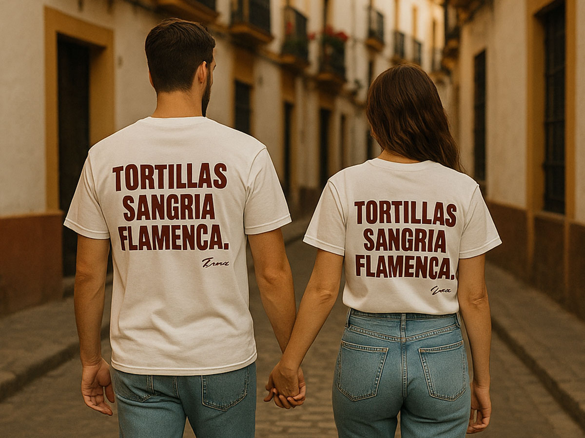
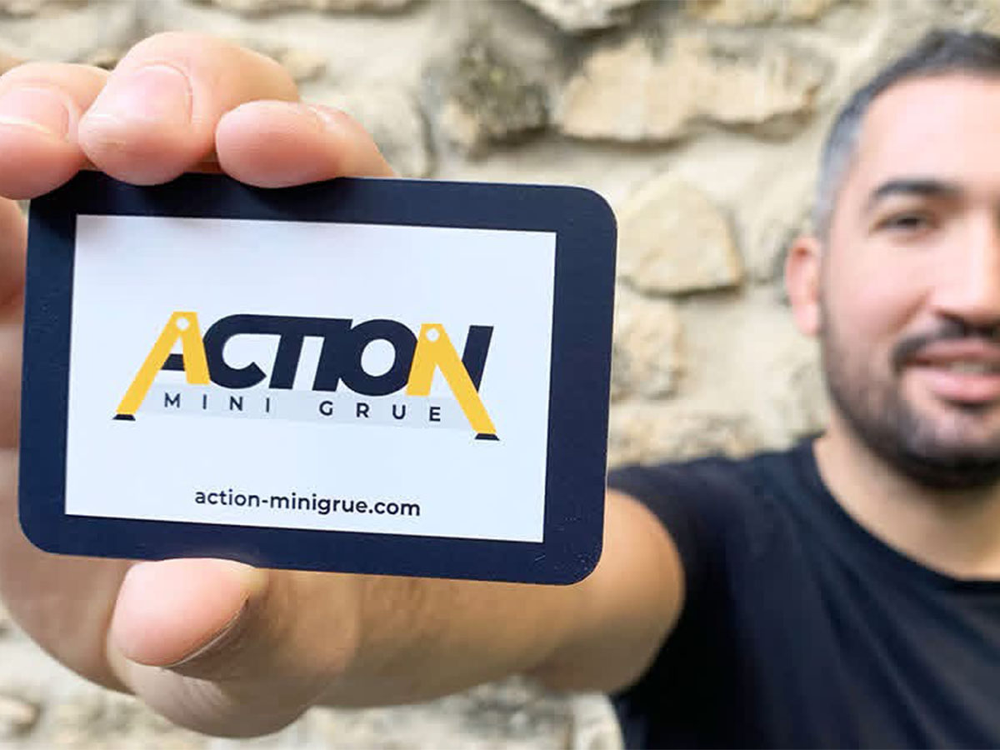
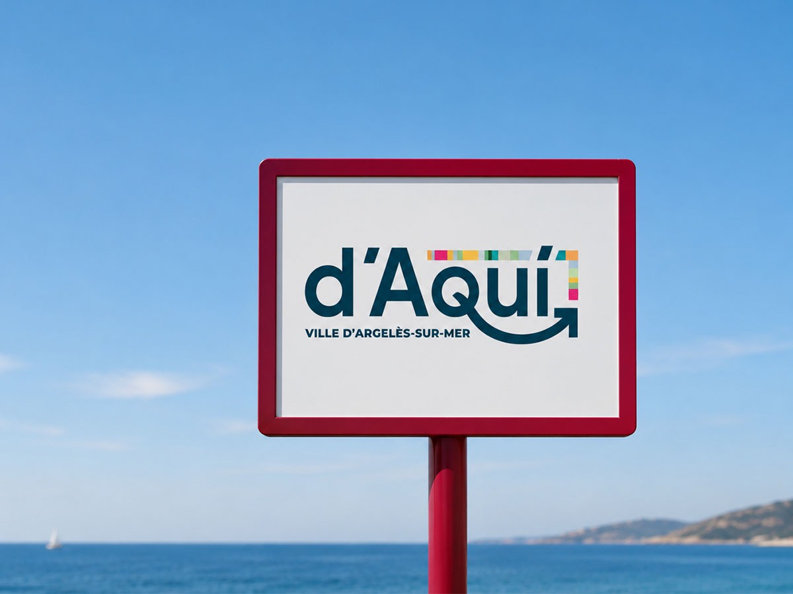

Un site e-commerce premium pour une marque de prêt-à-porter local et écoresponsable.

Un portail économique qui réunit l'offre de services du territoire et connecte les entreprises aux bonnes ressources.
Douze mini-films d'animation pour expliquer le tri aux 3-6 ans : Doli, le petit monstre qui avale les déchets et les recrache en objets tout neufs.

Une collection de merch (illustrations, tee-shirts, posters) pour l'événement d'été de l'association, à l'image du flamenco.

Identité de marque et site vitrine pour un opérateur de mini grue araignée qui se lance à son compte.

Identité du nouveau réseau de transport « D'AQUI » de la ville d'Argelès-sur-Mer.
Identité éditoriale pour une maison d'édition de livres d'art indépendante.
Design et intégration d'une landing page pour un lancement de produit mode.
Générique et habillage pour une émission culturelle diffusée en ligne.